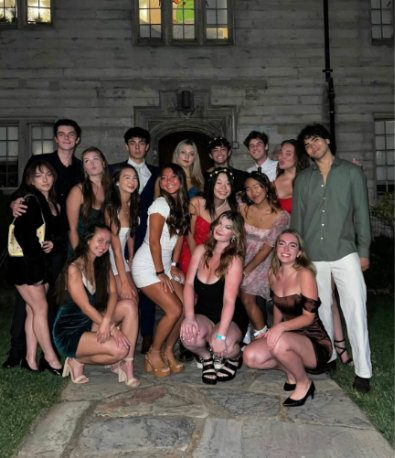
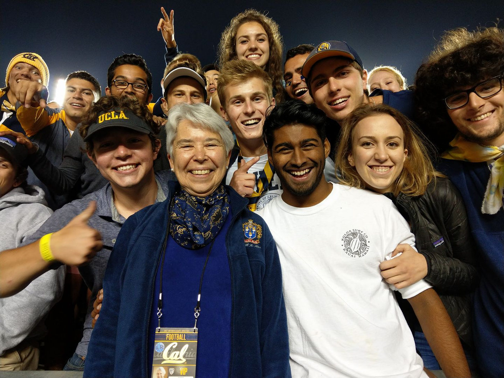
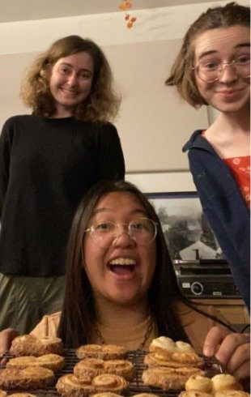
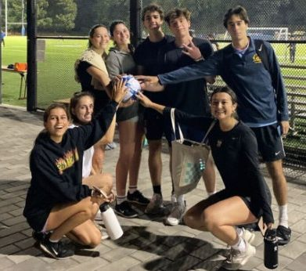
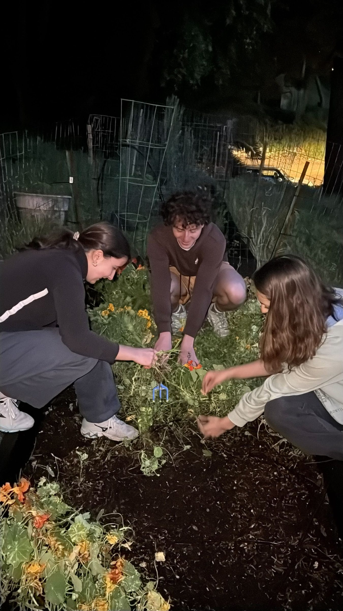
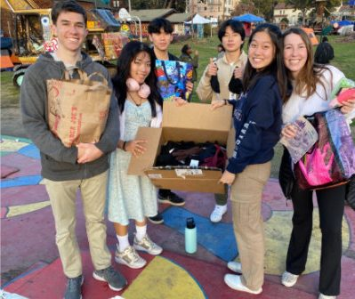
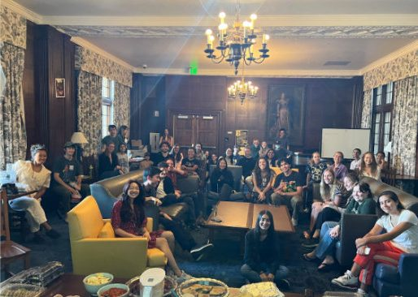
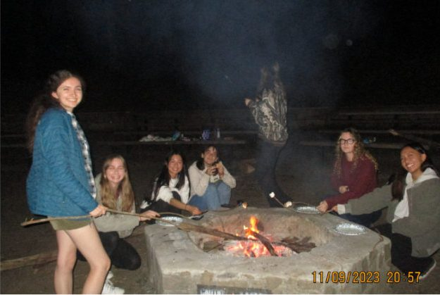

Social
Organizes the Hall's parties and events, including the traditional Fall Formal, Haunted House, Yule Ball, Spring Soirée, Founders Ball and Beach Party.

Student Life
Originating centuries ago at Oxford and Cambridge, the residential college builds student life around a small, diverse community of students, faculty and alumni. Inside a large research university like Berkeley, it makes the experience personal: in-residence faculty bridge home and campus, and residents learn to run a community of their own.
Hall Tour
Student Groups & Committees
Residents create and join an array of committees, clubs and groups within the Hall. A few of them:

Organizes the Hall's parties and events, including the traditional Fall Formal, Haunted House, Yule Ball, Spring Soirée, Founders Ball and Beach Party.

Smell something good coming from the dining hall? This group uses the student kitchen to cook together, learn new recipes and share them with the Hall.

Makes sport accessible to everyone in the Hall. Bowles fields more intramural teams than any other organization at Berkeley.

Revived the Bowles Hall Community Garden, growing carrots, lettuce, flowers, sweet peas and tomatoes. The best way to unwind after midterms.

Plans Big Game Dinner, fundraisers, community service and scholarships, and raises money for Bay Area non-profits.

Leads Hall-wide initiatives, from speaker series to cultural appreciation events, that keep the community learning from itself.

Focuses on climate awareness and education through film mornings, emissions projects, camping trips and learning to get around without a car.
Beyond the Hall
Residents are encouraged to take part in groups across campus, including Greek life. A residential college is meant to enhance the undergraduate experience, not replace it.
Rooms & amenities